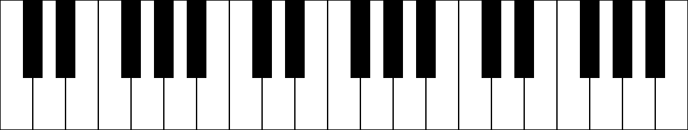
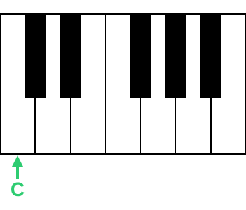
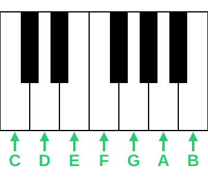
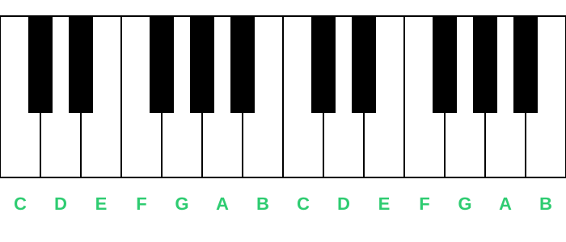
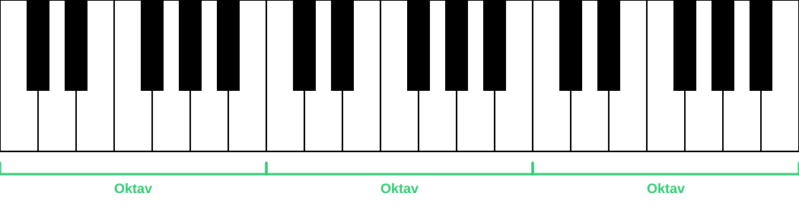

Välkommen till den första delen i Grundläggande musikteori.
Vi börjar helt från början - det är inga problem om du inte kan någonting om musikteori innan.
Efter varje del finns det övningar som du kan göra. Kom ihåg att öva, öva, öva och testa vad du kan!
I den här delen ska vi lära oss namnet på alla stamtoner (de vita tangenterna på pianot).
Vad är en ton?
En ton är ett ljud som låter på ett speciellt sätt. Toner kan vara ljusa (höga) eller mörka (låga). De har olika karaktär.
Toner finns överallt i ljud runt omkring oss. En ton kan höras från ett bi som surrar eller en fläkt som brummar.
Men när man tänker på toner, tänker nog de flesta på toner som kommer från olika instrument.
Det viktiga att veta är att toner har namn och det är det vi ska lära oss nu.
Vi använder pianot
Vi kommer att använda ett piano för att visa tonerna. Varför? För att det är lätt att se!
Ett piano har många tangenter (knapparna man trycker på). De är antingen vita eller svarta.
Idag fokuserar vi bara på de vita tangenterna. De svarta kommer senare!
Pianots hemliga mönster
Innan vi lär oss tonernas namn - titta noga på pianot. Ser du mönstret?

Först två svarta som ligger lite närmare varandra, och sen tre svarta.
Sen ser vi två svarta igen som ligger lite närmare varandra, och sen tre svarta. Det här är ett mönster som upprepar sig!
Inom varje del som upprepar sig finns det 7 st vita tangenter. Det är de vi ska fokusera på nu - de vita tangenterna.
Nu lär vi oss tonernas namn!
Den första vita tangenten till vänster om de två svarta tangenterna heter C.

Sedan går vi uppåt i alfabetet:

(Tonen B kallas ibland för H i äldre svensk musikteori. Idag används oftast B.)
Mönstret upprepar sig - Oktaver
Efter B börjar det om igen! Nästa tangent blir C igen, sen D, E, F, G, A, B... och så fortsätter det.
Det finns alltså många C:n på ett piano, många D:n, många E:n osv. Tonerna har samma namn, men de låter ljusare ju längre åt höger på pianot man spelar, och mörkare ju längre åt vänster.

Avståndet från en ton till nästa ton med samma namn kallas en oktav (till exempel från C till nästa C). En oktav består av åtta tonsteg: C, D, E, F, G, A, B, C. Det finns alltså sju olika tonnamn innan tonföljden börjar om. Toner med samma namn i olika oktaver låter lika, men den ena är högre eller lägre än den andra.
På pianot brukar man dela upp oktaverna från C till C, och varje sådant avstånd har ett eget namn - så att man kan skilja på till exempel ett ljust C och ett mörkt C. Det går vi igenom mer senare i kursen.

Bra jobbat!
Nu kan du namnen på alla vita tangenter! (C D E F G A B) Men de svarta tangenterna då? De tar vi lite senare.
Nästa steg: Vi ska lära oss hur man skriver ner toner i ett notsystem.
Redo att öva?